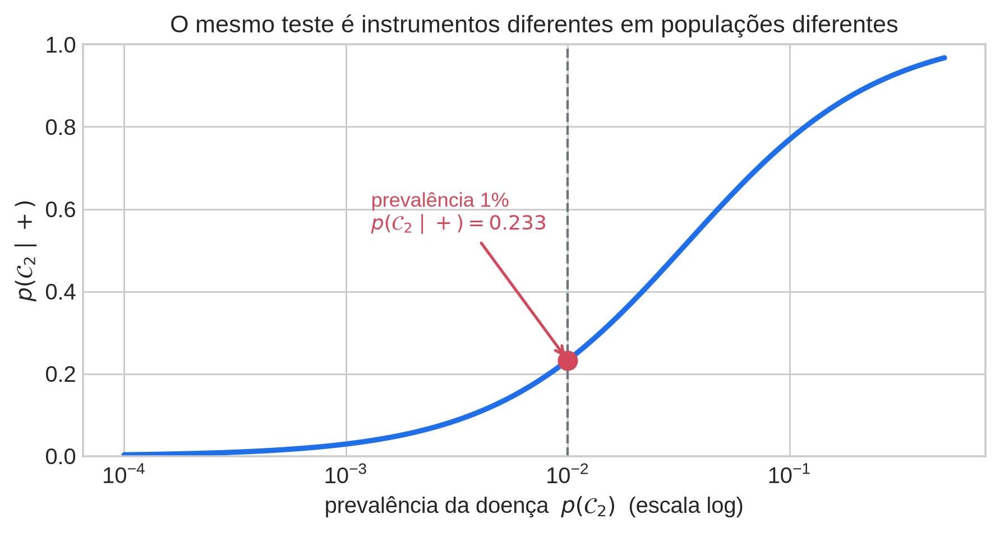
Classificação Probabilística em Uma Dimensão
Aula 1 — Densidades, Verossimilhança e Regras de Decisão
Posição desta aula no curso
Esta primeira aula estabelece a tese que as onze aulas seguintes vão apenas elaborar: todo algoritmo supervisionado é, simultaneamente, uma hipótese distribucional, uma verossimilhança e uma regra de decisão. A escolha de um problema unidimensional não é uma simplificação didática gratuita — é o que permite tornar as três coisas visíveis ao mesmo tempo. Com uma única variável contínua em \([0,1]\) e duas classes, a fronteira de decisão é um número, as probabilidades de erro são literalmente áreas sob duas curvas, e o compromisso entre elas pode ser desenhado em vez de apenas afirmado.
Pré-requisitos. Cálculo básico (integração, mudança de variáveis), probabilidade elementar (variáveis aleatórias, esperança, variância) e familiaridade com Python/NumPy/SciPy. Nenhuma exposição prévia a aprendizado de máquina é assumida.
Leituras. Bishop & Bishop (2024), §2.1.1, §2.1.3–2.1.5 (pp. 25–31), §2.2–2.2.1 (pp. 32–34), §5.2.1–5.2.3 (pp. 139–143), §5.2.5 (pp. 147–148), §5.2.6 (pp. 148–150); Bishop (2006, PRML), §2.1.1 (pp. 71–74), §1.5–1.5.3 (pp. 38–42).
Duas advertências sobre as fontes. (i) O livro de 2024 não cobre a distribuição Beta — o Capítulo 3 vai de Bernoulli/binomial direto para a Gaussiana multivariada. Todo o material sobre a Beta vem do PRML §2.1.1. (ii) O PRML introduz a Beta como priori conjugada sobre o parâmetro \(\mu\) de uma Bernoulli, e não como densidade sobre dados observados. Nesta aula ela é reaproveitada como modelo de dados para observações limitadas \(x \in [0,1]\). A matemática é idêntica; a interpretação não é, e essa diferença deve ser dita em voz alta, não varrida para debaixo do tapete.
1 Por que a probabilidade vem primeiro
Antes de qualquer algoritmo, antes de qualquer otimização, um classificador já existe. Ele é dado pelo teorema de Bayes, e o exemplo canônico é o de rastreamento médico (Bishop & Bishop, §2.1.1, pp. 25–26, retomado em §2.1.4, p. 30).
Considere uma doença que afeta 1 em cada 100 pessoas. Um teste detecta 90% dos casos verdadeiramente doentes (sensibilidade) e produz um resultado positivo em 3% das pessoas saudáveis (taxa de falso positivo). Uma pessoa testa positivo. Qual a probabilidade de que ela esteja de fato doente?
Sejam \(\mathcal{C}_1\) = “saudável”, \(\mathcal{C}_2\) = “doente”, e \(t=+\) o evento “teste positivo”. Os ingredientes são:
\[ p(\mathcal{C}_2) = 0{,}01, \qquad p(+ \mid \mathcal{C}_2) = 0{,}90, \qquad p(+ \mid \mathcal{C}_1) = 0{,}03 . \]
O teorema de Bayes é a identidade
\[ p(\mathcal{C}_k \mid t) \;=\; \frac{p(t \mid \mathcal{C}_k)\, p(\mathcal{C}_k)}{p(t)}, \qquad p(t) \;=\; \sum_{j} p(t \mid \mathcal{C}_j)\, p(\mathcal{C}_j), \]
que nada mais é do que a definição de probabilidade condicional lida em duas direções, mais a regra da soma no denominador. Numericamente:
\[ p(\mathcal{C}_2 \mid +) \;=\; \frac{0{,}90 \times 0{,}01}{0{,}90 \times 0{,}01 + 0{,}03 \times 0{,}99} \;=\; \frac{0{,}0090}{0{,}0387} \;\approx\; 0{,}233 . \]
Um teste com 90% de sensibilidade, aplicado a alguém que testou positivo, deixa essa pessoa com menos de um quarto de probabilidade de estar doente. O resultado desconcerta praticamente todos os estudantes na primeira exposição, e a razão é conhecida: a intuição desloca a atenção para \(p(+ \mid \mathcal{C}_2)\) e ignora a priori \(p(\mathcal{C}_2)\), um viés cognitivo suficientemente estável para ter nome próprio (base rate neglect).
O valor pedagógico é outro, porém. Note o que foi necessário para construir esse classificador: (i) um modelo condicional à classe, \(p(t \mid \mathcal{C}_k)\); (ii) uma priori, \(p(\mathcal{C}_k)\); (iii) uma regra que converte a posteriori em ação. Nenhum “treinamento” aconteceu. Nenhuma função de perda foi minimizada por gradiente. Todo o resto do curso é maquinário para estimar (i) e (ii) quando o problema é mais difícil — quando \(x\) é contínuo, multidimensional, estruturado — e para escolher (iii) quando os erros têm custos diferentes.
A dependência do resultado com a prevalência é violenta, e vale plotá-la: o mesmo teste, aplicado a uma população de risco em vez de à população geral, é um instrumento completamente diferente.
A curva acima é a mensagem do bloco em forma gráfica: a qualidade do teste (sensibilidade e especificidade) é fixa ao longo de todo o eixo horizontal. O que muda é a priori. Um classificador é a composição de um modelo de observação com uma crença sobre a população — e ignorar a segunda parte produz sistemas que funcionam no laboratório e falham em produção.
2 De contagens a densidades
O exemplo do rastreamento é discreto: o teste dá positivo ou negativo. O passo seguinte é substituir esse resultado binário por uma medida contínua — um escore, uma concentração, uma proporção. Isso exige trocar probabilidades por densidades.
2.1 Densidade não é probabilidade
Uma densidade \(p(x)\) sobre a reta satisfaz duas condições (Bishop & Bishop, §2.2, pp. 32–33, eqs. 2.27–2.28):
\[ p(x) \ge 0 \qquad\text{e}\qquad \int_{-\infty}^{\infty} p(x)\, \mathrm{d}x = 1 , \]
e a probabilidade de um intervalo é a integral
\[ P(a < x \le b) \;=\; \int_a^b p(x)\, \mathrm{d}x . \]
A consequência que causa desconforto: \(p(x)\) pode ser maior que 1. Não há nada de errado com uma densidade que vale 3 em algum ponto, desde que a área total seja 1. O único objeto restrito a \([0,1]\) é a integral, não o integrando. Uma densidade tem unidade de “probabilidade por unidade de \(x\)”; se \(x\) é medido em milímetros, \(p(x)\) tem unidade \(\text{mm}^{-1}\) e muda de valor numérico se você passar a medir em metros. Probabilidades são adimensionais; densidades não.
Formalmente, sob uma mudança de variável \(x = g(y)\) a densidade se transforma com o jacobiano,
\[ p_y(y) \;=\; p_x\big(g(y)\big)\,\left| g'(y) \right| , \]
o que explica por que o modo de uma densidade não é invariante a reparametrizações — um ponto que voltará na Aula 5, quando discutirmos estimação por máximo a posteriori.
2.2 O suporte é uma decisão de modelagem
Escores de crédito, taxas de inadimplência, click-through rates, proporções, frações de tempo, medidas normalizadas: uma quantidade enorme dos atributos com que trabalhamos vive em \([0,1]\) por construção. Ajustar uma Gaussiana a esses dados tem três consequências, todas ruins:
- o modelo atribui massa positiva fora da região viável, \(P(x<0)+P(x>1) > 0\);
- quantis e limiares derivados do modelo podem cair fora do domínio, produzindo regras de decisão inexecutáveis;
- a simetria da Gaussiana é incompatível com a assimetria que dados limitados quase sempre exibem perto das bordas.
O suporte do modelo é uma decisão de modelagem, não um detalhe técnico. Escolher a família paramétrica é declarar o que se acredita sobre o fenômeno. Essa é a primeira das três componentes anunciadas na abertura do curso.
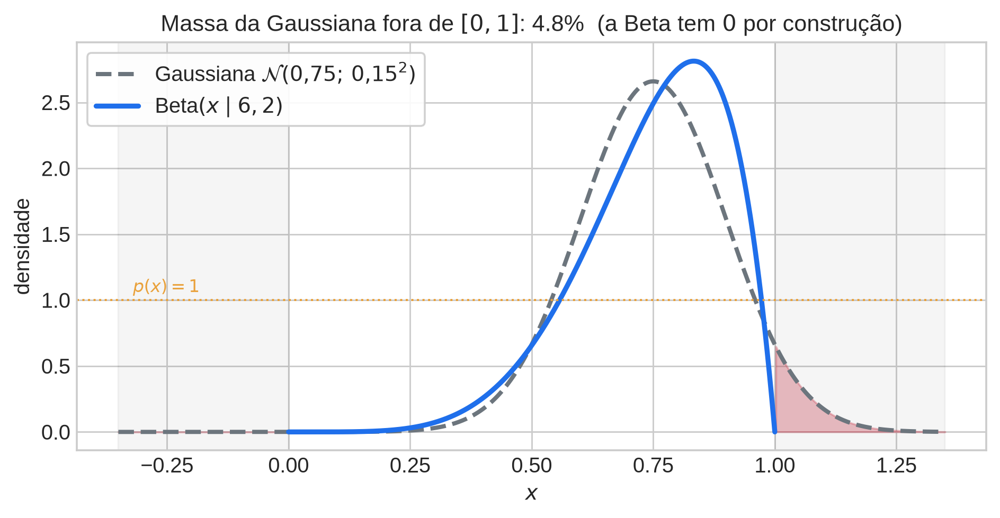
3 Bloco 2 — A distribuição Beta
3.1 Definição
A distribuição Beta (PRML eq. 2.13, p. 71) é
\[ \mathrm{Beta}(x \mid a, b) \;=\; \frac{\Gamma(a+b)}{\Gamma(a)\,\Gamma(b)}\; x^{a-1}\,(1-x)^{b-1}, \qquad x \in [0,1],\quad a>0,\ b>0 , \]
onde \(\Gamma(\cdot)\) é a função Gama, \(\Gamma(z) = \int_0^\infty u^{z-1}e^{-u}\,\mathrm{d}u\), com a propriedade \(\Gamma(z+1) = z\,\Gamma(z)\). O fator \(B(a,b) = \Gamma(a)\Gamma(b)/\Gamma(a+b)\) é a função Beta, e é exatamente a constante que normaliza o núcleo \(x^{a-1}(1-x)^{b-1}\).
Advertência de interpretação. No PRML esta densidade aparece como priori conjugada sobre o parâmetro \(\mu \in [0,1]\) de uma Bernoulli. Aqui ela é usada como modelo de dados: \(x\) é a observação, não um parâmetro. A álgebra é a mesma, o significado não. Se o aluno ler §2.1.1 sem esse aviso, vai passar a aula inteira tentando reconciliar duas leituras incompatíveis do mesmo símbolo.
3.2 A galeria de formas
A Figura 2.2 do PRML (p. 72) é a imagem mais útil desta aula. Três regimes:
- \(a, b < 1\) — densidade em forma de U, com massa concentrada nos dois extremos e divergência (integrável) em \(0\) e \(1\);
- \(a = b = 1\) — uniforme em \([0,1]\);
- \(a, b > 1\) — unimodal, com assimetria controlada pela razão \(a/b\) e concentração controlada por \(a+b\).
Essa flexibilidade com apenas dois parâmetros é o motivo pelo qual a Beta é a escolha natural para dados limitados: ela cobre desde “quase tudo nas bordas” até “concentrado no meio” sem sair do suporte correto.
3.3 Momentos
\[ \mathbb{E}[x] = \frac{a}{a+b}, \qquad \mathrm{Var}[x] = \frac{ab}{(a+b)^2 (a+b+1)}, \qquad \mathrm{moda} = \frac{a-1}{a+b-2}\ \ (a,b>1) . \]
A forma da variância deixa claro que \(a+b\) funciona como um “tamanho amostral efetivo”: mantendo a média fixa e aumentando \(a+b\), a densidade se concentra.
3.4 Ajuste: duas rotas, honestamente
Máxima verossimilhança não tem forma fechada. Para \(\{x_n\}_{n=1}^N\),
\[ \ln p(\mathbf{x} \mid a,b) = N\big[\ln\Gamma(a+b) - \ln\Gamma(a) - \ln\Gamma(b)\big] + (a-1)\sum_n \ln x_n + (b-1)\sum_n \ln(1-x_n), \]
e as condições de estacionariedade são
\[ \psi(a) - \psi(a+b) = \frac{1}{N}\sum_n \ln x_n, \qquad \psi(b) - \psi(a+b) = \frac{1}{N}\sum_n \ln (1-x_n), \]
onde \(\psi = \Gamma'/\Gamma\) é a função digama. Não há solução analítica; é preciso resolver numericamente. Não prometa aos alunos uma fórmula que não existe. (Note, de passagem, que as estatísticas suficientes são \(\sum \ln x_n\) e \(\sum \ln(1-x_n)\) — a Beta é família exponencial, tema da Aula 3.)
O método dos momentos tem forma fechada. Com média amostral \(m\) e variância amostral \(v\) satisfazendo \(v < m(1-m)\):
\[ \hat{a} = m\left(\frac{m(1-m)}{v} - 1\right), \qquad \hat{b} = (1-m)\left(\frac{m(1-m)}{v} - 1\right) . \]
A condição \(v < m(1-m)\) não é decorativa: \(m(1-m)\) é a variância máxima possível para uma variável em \([0,1]\) com média \(m\) (atingida pela Bernoulli), e a violação dessa desigualdade produz estimativas negativas.
Este é um bom primeiro encontro com a ideia de que estimadores diferem, e de que “ter forma fechada” e “ser ótimo” são propriedades distintas — tema que retorna nas Aulas 5 e 7.
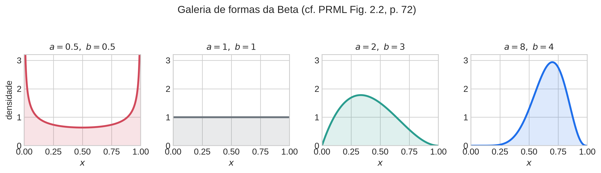
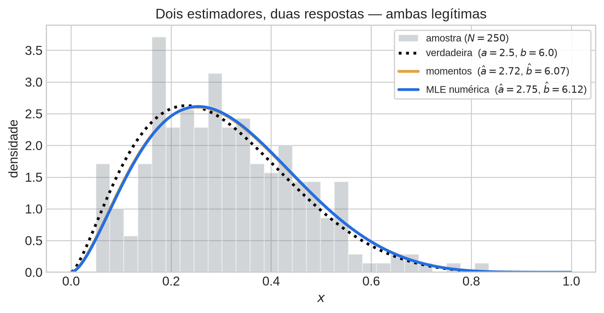
4 Bloco 3 — Uma classe: anomalia como evento de cauda
Suponha agora que se disponha apenas de observações normais — o cenário típico em detecção de falhas, monitoramento industrial, detecção de fraude nos primeiros meses de operação. Ajusta-se uma Beta a esses dados e define-se a região de exclusão como um conjunto de baixa probabilidade sob o modelo ajustado. Há duas construções usuais:
- cauda: \(\mathcal{R}_\alpha = \{x : x > t_\alpha\}\), com \(t_\alpha\) tal que \(P(x > t_\alpha \mid \mathcal{C}_1) = \alpha\);
- conjunto de nível: \(\mathcal{R}_\lambda = \{x : p(x \mid \mathcal{C}_1) < \lambda\}\), que captura simultaneamente as duas caudas quando a densidade é unimodal.
Em ambos os casos o limiar é um quantil do modelo ajustado, e a taxa de falso alarme é \(\alpha\) por construção:
\[ t_\alpha \;=\; F^{-1}(1-\alpha), \qquad F(t) = I_t(a,b), \]
onde \(I_t(a,b)\) é a função beta incompleta regularizada — que em Python é simplesmente scipy.stats.beta.cdf.
4.1 A limitação que motiva o bloco seguinte
Aqui está o ponto que os alunos sistematicamente deixam passar, e que vale enunciar de forma categórica:
Com uma única densidade ajustada, o erro Tipo II não está definido.
Não existe modelo do que uma anomalia é. Sem \(p(x \mid \mathcal{C}_2)\), a probabilidade de deixar de detectá-la não é uma quantidade calculável — não é “difícil de estimar”, é indefinida. O que se controla é apenas o falso alarme.
Isso tem consequências práticas imediatas. Um detector de uma classe com \(\alpha = 0{,}01\) soa impressionante e pode ser completamente inútil: se as anomalias reais se distribuem majoritariamente abaixo de \(t_\alpha\), a taxa de detecção é próxima de zero e nada no procedimento revela isso. Declarar \(\alpha\) sem declarar a potência é meia informação.
É exatamente essa lacuna que o próximo bloco preenche.
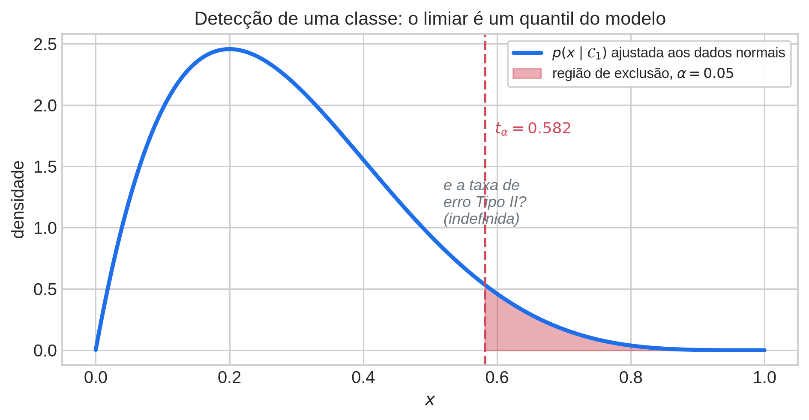
5 Bloco 4 — Duas classes: densidades sobrepostas
Introduzimos agora um modelo para as duas classes:
\[ p(x \mid \mathcal{C}_1) = \mathrm{Beta}(x \mid a_1, b_1), \qquad p(x \mid \mathcal{C}_2) = \mathrm{Beta}(x \mid a_2, b_2), \]
com prioris \(\pi_1 = p(\mathcal{C}_1)\) e \(\pi_2 = p(\mathcal{C}_2)\), \(\pi_1+\pi_2=1\). As densidades conjuntas são
\[ p(x, \mathcal{C}_k) \;=\; \pi_k \, p(x \mid \mathcal{C}_k) . \]
5.1 O argumento de regiões (PRML Fig. 1.24, p. 40)
Considere uma regra da forma: decidir \(\mathcal{C}_2\) se \(x > \hat{x}\) e \(\mathcal{C}_1\) caso contrário. A probabilidade de erro é
\[ p(\text{erro}) = p(x \in \mathcal{R}_2, \mathcal{C}_1) + p(x \in \mathcal{R}_1, \mathcal{C}_2) = \int_{\hat{x}}^{1} \pi_1 p(x\mid\mathcal{C}_1)\,\mathrm{d}x + \int_{0}^{\hat{x}} \pi_2 p(x\mid\mathcal{C}_2)\,\mathrm{d}x . \]
Derivando em relação a \(\hat{x}\) pelo teorema fundamental do cálculo:
\[ \frac{\mathrm{d}\,p(\text{erro})}{\mathrm{d}\hat{x}} = -\pi_1 p(\hat{x}\mid\mathcal{C}_1) + \pi_2 p(\hat{x}\mid\mathcal{C}_2) = 0 \;\;\Longleftrightarrow\;\; \pi_1 p(\hat{x}\mid\mathcal{C}_1) = \pi_2 p(\hat{x}\mid\mathcal{C}_2) , \]
isto é, o ótimo está no cruzamento das duas curvas conjuntas. Dividindo ambos os lados por \(p(\hat x)\), a condição é equivalente a \(p(\mathcal{C}_1 \mid \hat x) = p(\mathcal{C}_2 \mid \hat x)\), e portanto a regra ótima é exatamente
\[ \boxed{\ \text{atribuir } x \text{ à classe } k \text{ que maximiza } p(\mathcal{C}_k \mid x).\ } \]
O argumento geométrico do PRML diz a mesma coisa sem cálculo: ao mover \(\hat{x}\), duas das três regiões de erro trocam área entre si de forma que a soma permanece constante, enquanto a terceira encolhe a zero precisamente no ponto de cruzamento.
Ênfase que deve ser repetida. A Figura 1.24 do PRML plota distribuições conjuntas, não condicionais à classe. A interpretação dos erros como áreas só funciona depois que as prioris foram incorporadas. Esta é, de longe, a maior fonte de confusão da aula inteira — vale restaurá-la no quadro pelo menos duas vezes.
5.2 Os dois erros, em forma fechada
Com a convenção “positivo = classe 2” e regra \(x > t \Rightarrow \mathcal{C}_2\):
- Tipo I (falso positivo): \(\;P(x > t \mid \mathcal{C}_1) = 1 - I_t(a_1, b_1)\)
- Tipo II (falso negativo): \(\;P(x \le t \mid \mathcal{C}_2) = I_t(a_2, b_2)\)
Agora ambos estão definidos, e ambos são calculáveis exatamente pela função beta incompleta regularizada — nenhuma simulação é necessária. Este é um luxo raro: em quase todo modelo realista essas quantidades exigem Monte Carlo.
Nota terminológica. “Tipo I” e “Tipo II” são rótulos de teste de hipóteses e pressupõem uma hipótese nula designada. Em detecção de anomalias a nula é “normal”. Num problema simétrico de duas classes, a rotulação é convenção e precisa ser anunciada antes do uso, sob pena de metade da turma inverter os índices.
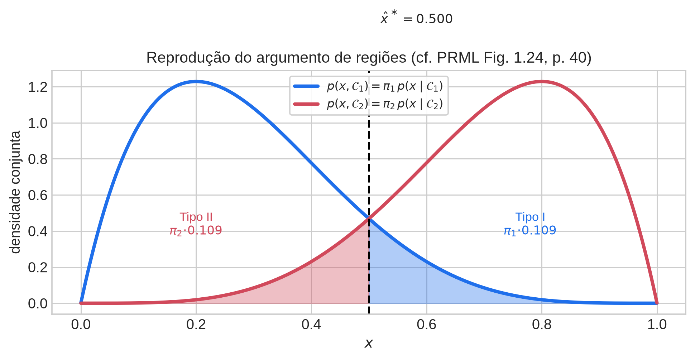
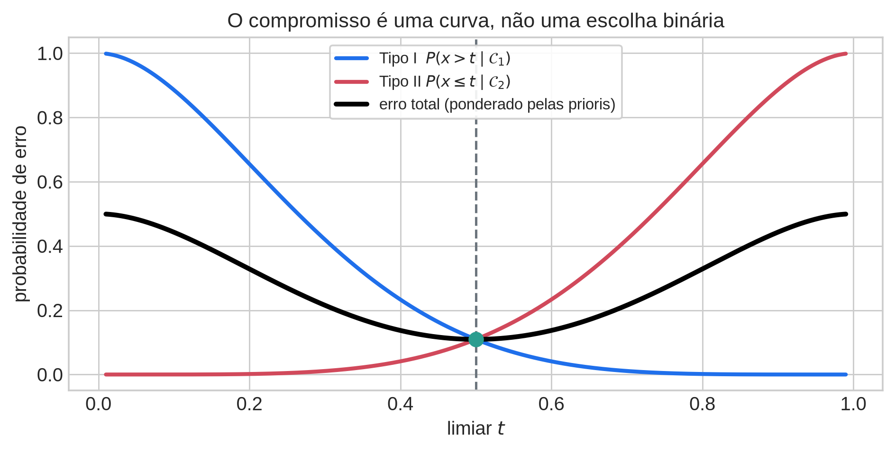
6 Bloco 5 — Quantificando e negociando os erros
6.1 A matriz de confusão e suas razões
Fixado um limiar, a tabela de contingência entre verdade e predição (Bishop & Bishop, §5.2.5, eqs. 5.30–5.33, pp. 147–148) tem quatro células: verdadeiro positivo (VP), falso positivo (FP), falso negativo (FN), verdadeiro negativo (VN). Delas derivam:
\[ \text{Acurácia} = \frac{\mathrm{VP}+\mathrm{VN}}{N}, \qquad \text{Precisão} = \frac{\mathrm{VP}}{\mathrm{VP}+\mathrm{FP}}, \]
\[ \text{Revocação (TPR)} = \frac{\mathrm{VP}}{\mathrm{VP}+\mathrm{FN}}, \qquad \text{FPR} = \frac{\mathrm{FP}}{\mathrm{FP}+\mathrm{VN}}, \qquad \text{FDR} = \frac{\mathrm{FP}}{\mathrm{VP}+\mathrm{FP}} . \]
O exemplo cautelar dos próprios autores merece ser repetido: com 1 caso em 1.000, um classificador que responde “negativo” para todo mundo atinge 99,9% de acurácia e é inteiramente inútil. Acurácia não é um resumo escalar de um problema de decisão.
Observe a diferença estrutural entre as métricas: TPR e FPR são condicionais à classe verdadeira e, portanto, não dependem da priori; precisão e FDR envolvem a mistura das classes e dependem. Essa distinção explica o comportamento da curva ROC no experimento final do laboratório.
6.2 A curva ROC
Varrendo \(t\) de 1 a 0 e traçando \((\mathrm{FPR}(t), \mathrm{TPR}(t))\) obtém-se a curva ROC (Bishop & Bishop, §5.2.6, pp. 148–150). Para o nosso modelo,
\[ \mathrm{FPR}(t) = 1 - I_t(a_1,b_1), \qquad \mathrm{TPR}(t) = 1 - I_t(a_2,b_2), \]
uma curva paramétrica em \(t\), disponível em forma fechada. A leitura correta é:
A ROC é o lugar geométrico dos pontos de operação alcançáveis para um par fixo de densidades ajustadas. A curva é propriedade do modelo; o ponto escolhido sobre ela é propriedade da aplicação.
Um resultado clássico, útil para enquadrar o resto do curso: a inclinação da ROC no ponto correspondente ao limiar \(t\) é igual à razão de verossimilhanças \(p(t\mid\mathcal{C}_2)/p(t\mid\mathcal{C}_1)\). Portanto o ponto de mínima perda esperada é o ponto de tangência entre a ROC e a família de retas de inclinação \(\pi_1 L_{12} / (\pi_2 L_{21})\).
6.3 Perda esperada e limiar deslocado
Nem todo erro custa o mesmo. Introduza a matriz de perda \(L_{kj}\) = custo de decidir \(\mathcal{C}_j\) quando a verdade é \(\mathcal{C}_k\) (PRML §1.5.2, p. 41; Bishop & Bishop §5.2.2, p. 140). A perda esperada é
\[ \mathbb{E}[L] = \sum_k \sum_j \int_{\mathcal{R}_j} L_{kj}\, p(x, \mathcal{C}_k)\, \mathrm{d}x , \]
e minimizá-la ponto a ponto significa escolher, para cada \(x\), o \(j\) que minimiza \(\sum_k L_{kj}\, p(\mathcal{C}_k \mid x)\). No caso binário com \(L_{11}=L_{22}=0\), a fronteira satisfaz
\[ \boxed{\ \pi_1 L_{12}\, p(t\mid\mathcal{C}_1) \;=\; \pi_2 L_{21}\, p(t\mid\mathcal{C}_2).\ } \]
A leitura é direta: aumentar \(L_{21}\) (custo de deixar passar uma detecção) empurra o limiar para a esquerda, ampliando a região onde se declara \(\mathcal{C}_2\). O deslocamento é previsível e quantificável — não é uma “calibração empírica”.
6.4 A opção de rejeição
Nas regiões onde \(\max_k p(\mathcal{C}_k \mid x)\) é próximo de \(1/2\), qualquer decisão é quase um sorteio. Se existe uma terceira ação — encaminhar a um especialista, pedir outro exame, adiar — então abster-se pode ser a ação de menor perda (PRML §1.5.3, p. 42; Bishop & Bishop §5.2.3, p. 142). A regra é
\[ \text{rejeitar } x \quad\text{se}\quad \max_k p(\mathcal{C}_k \mid x) < \theta , \]
com \(\theta \in (1/2, 1]\). Para \(\theta = 1\) tudo é rejeitado; para \(\theta \le 1/2\) (no caso binário) nada é. Se a rejeição tem custo fixo \(\lambda\) e os erros custam 1, o limiar ótimo é \(\theta = 1 - \lambda\): acima do custo de errar, rejeitar deixa de compensar. Este é o conteúdo do Exercício 1.24 do PRML.
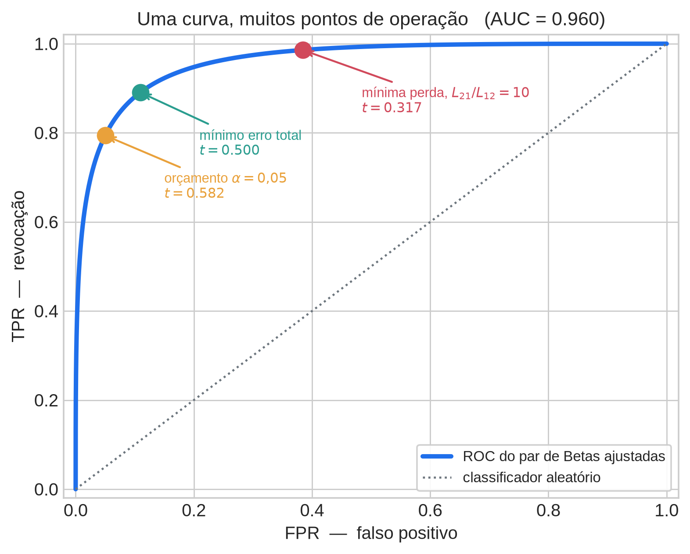
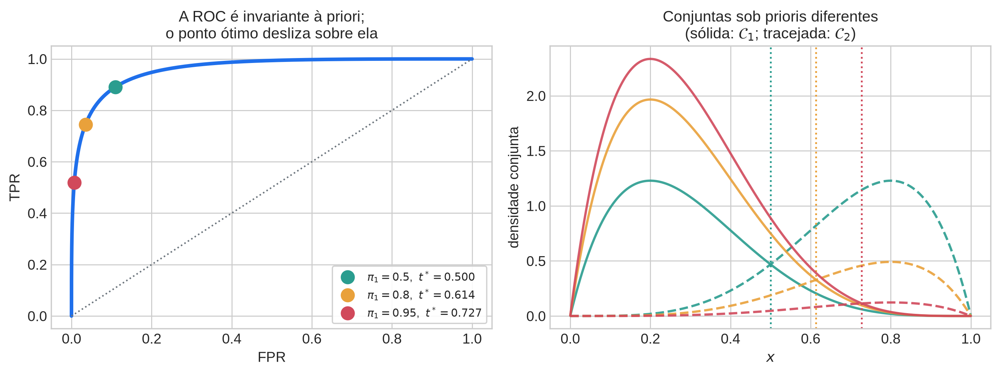
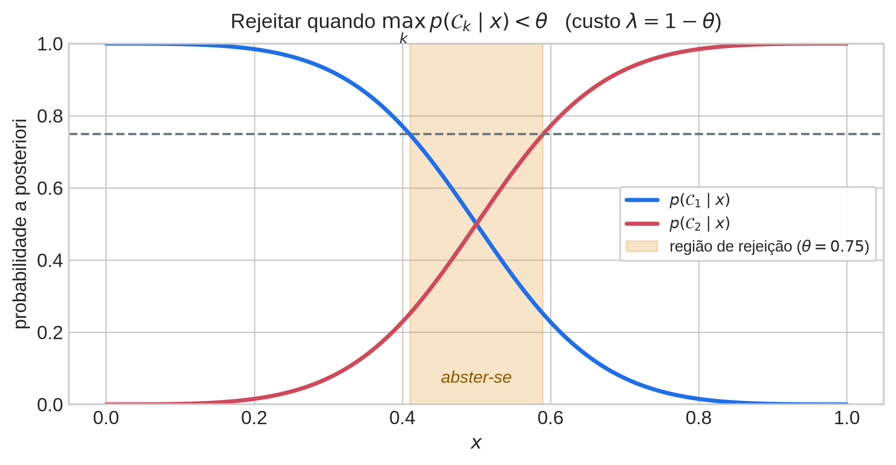
7 Bloco 6 — Fechamento e ponte
A frase que deve sair desta aula, e que vale escrever no quadro antes de encerrar:
Um limiar de decisão não é um hiperparâmetro a ser ajustado no escuro — é a solução de um problema de otimização definido pelas densidades ajustadas, pelas prioris e pela perda.
Cada um dos três ingredientes é falsificável e cada um pode estar errado de forma independente: a família paramétrica pode não caber nos dados; a priori de treino pode não ser a priori de operação; a matriz de perda pode nunca ter sido explicitada com quem toma a decisão. Boa parte dos fracassos de sistemas de ML em produção é uma dessas três coisas, não um problema de arquitetura.
Ponte para a Aula 2. Tudo aqui repousou sobre um atributo. Com \(D\) atributos, \(p(\mathbf{x} \mid \mathcal{C}_k)\) passa a ser um objeto em dimensão \(D\), e o número de parâmetros necessários para descrevê-lo sem hipóteses adicionais cresce exponencialmente. A próxima aula introduz a primeira hipótese estrutural do curso — independência condicional, isto é, Naive Bayes — como o preço mínimo a pagar para tornar essa densidade estimável. A razão de verossimilhanças, que aqui apareceu implicitamente na inclinação da ROC, será formalizada lá, onde ela tem o espaço que merece.
8 Conexão com o estado da arte
Vale terminar mostrando que nada do que foi construído hoje ficou para trás — apenas mudou de nome e de escala.
8.1 A rede neural é a mesma equação
Um classificador neural moderno com saída softmax treinado com entropia cruzada é, literalmente, um modelo da posteriori \(p(\mathcal{C}_k \mid \mathbf{x})\) estimado por máxima verossimilhança. O argmax na saída é a regra de decisão do Bloco 4 sob perda 0–1. Tudo que se acrescentou foi um estimador flexível para a mesma quantidade. Em particular:
pos_weight, class weights, focal loss são reimplementações da matriz de perda assimétrica \(L_{kj}\) dentro do treinamento, em vez de na decisão. O Bloco 5 explica exatamente para onde o limiar se desloca em consequência.- Ajuste de limiar pós-treino (o onipresente “escolhemos 0,37 no conjunto de validação”) é a busca do ponto de tangência na ROC. Fazer isso sem declarar a perda é escolher um ponto arbitrário de uma curva e chamá-lo de resultado.
8.2 Calibração
Uma rede profunda pode ter excelente AUC e posterioris péssimas. Como a AUC depende apenas da ordenação dos escores, ela é invariante a qualquer transformação monótona — e portanto cega à calibração. Mas o Bloco 5 mostra que a decisão ótima depende do valor da posteriori, não só da ordem. Daí a importância prática de temperature scaling, Platt scaling e regressão isotônica: eles restauram a interpretação probabilística sem alterar a ROC. A distinção entre “ordenar bem” e “estimar bem” é a mesma que separa a curva do ponto de operação.
8.3 Abstenção em modelos de larga escala
A opção de rejeição do PRML §1.5.3 reaparece hoje sob os nomes de selective prediction, cascatas de modelos e deferral to human. Um LLM que responde “não tenho informação suficiente”, ou um roteador que envia consultas difíceis a um modelo maior e mais caro, está resolvendo exatamente \(\max_k p(\mathcal{C}_k \mid x) < \theta\) com \(\theta\) determinado pela razão entre o custo do erro e o custo da escalação. Predição conformal vai além: constrói conjuntos de predição com cobertura garantida em amostra finita — o mesmo espírito do Bloco 3 (controlar \(\alpha\) por construção), agora sem hipótese paramétrica.
8.4 Suporte limitado e caudas, de volta
A insistência do Bloco 1 sobre o suporte reaparece em contextos bem modernos: verossimilhanças Beta e Beta-inflated para modelar taxas em modelos hierárquicos, distribuições Beta e Dirichlet como saídas de redes em evidential deep learning, e a modelagem explícita de caudas por teoria de valores extremos em recuperação de informação e detecção de fora-da-distribuição. Em todos, a escolha da família continua sendo a declaração de hipótese que ela sempre foi.
8.5 Um exemplo doméstico: escoragem de crédito
O cenário do Bloco 3 — só se observam os “normais” — é, em crédito, o problema de inferência de rejeitados: o banco só observa o desempenho de quem teve o crédito aprovado, e o modelo é retreinado sobre essa amostra selecionada. O limiar de aprovação é literalmente o \(t\) desta aula; a perda assimétrica é a razão entre perda por inadimplência e margem perdida por recusa; a região de rejeição é a fila de análise manual. Toda a estrutura de hoje está lá, com nomes de negócio, e a dificuldade adicional é que \(p(x \mid \mathcal{C}_2)\) para a população rejeitada não é observável — exatamente a lacuna que o Bloco 3 nos ensinou a enunciar em vez de esconder.
9 Derivações para o quadro
Normalização da Beta (PRML Ex. 2.5, p. 128). Parte-se de \(\Gamma(a)\Gamma(b) = \int_0^\infty\!\!\int_0^\infty x^{a-1}y^{b-1}e^{-x-y}\,\mathrm{d}x\,\mathrm{d}y\) e faz-se a mudança \(t = y + x\), \(x = t\mu\), com jacobiano \(t\). Se o tempo estiver curto, atribua como leitura — o mecanismo é bonito mas não é o ponto central da aula.
Média e variância da Beta e inversão para o método dos momentos (PRML Ex. 2.6, p. 129). Curta, e entrega ao aluno um estimador funcionando antes do fim da aula. Faça esta.
A fronteira de mínima classificação incorreta como cruzamento das conjuntas (PRML eqs. 1.78–1.79, pp. 39–40). Faça pelo argumento de áreas e pela derivada; os dois se iluminam mutuamente.
Como a fronteira se move sob perda assimétrica — modificação de duas linhas da derivação 3 que muda completamente a resposta prática. É o melhor custo-benefício da aula.
10 Laboratório computacional
Um único notebook, para a segunda metade da aula ou logo em seguida.
- Simule (ou carregue) um atributo limitado para duas populações; plote histogramas contra as Betas ajustadas.
- Ajuste por método dos momentos e por MLE numérica (
scipy.stats.beta.fitcomfloc=0, fscale=1); compare e discuta a discrepância. - Calcule os erros Tipo I e Tipo II analiticamente com
scipy.stats.beta.cdfe verifique-os empiricamente por simulação. - Varra o limiar, trace a ROC e marque três pontos de operação: mínimo erro total, orçamento fixo de falso alarme \(\alpha = 0{,}05\), e mínima perda esperada sob assimetria 10:1.
- Repita o passo 4 com uma priori fortemente desbalanceada e observe que a ROC não se move e o ponto ótimo sim.
O passo 5 é a recompensa intelectual do laboratório e não deve ser cortado.
O bloco abaixo resume numericamente o que o aluno deve reproduzir.
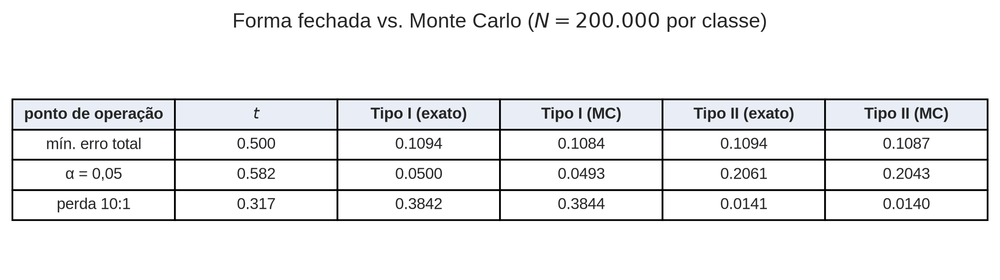
11 Exercícios sugeridos
- PRML 2.5 (p. 128) — normalização da Beta.
- PRML 2.6 (p. 129) — média, variância e moda da Beta.
- PRML 1.24 (p. 64) — mínima perda esperada com opção de rejeição, e a relação entre o custo de rejeitar e o limiar \(\theta\).
- Exercício do curso. Dadas duas Betas ajustadas e uma razão de custos, resolva numericamente para o limiar ótimo e mostre que ele coincide com o ponto de tangência sobre a ROC. (Sugestão: use
brentqsobre \(\pi_1 L_{12} p(t\mid\mathcal{C}_1) - \pi_2 L_{21} p(t\mid\mathcal{C}_2)\) e compare a inclinação numérica \(\mathrm{d}\mathrm{TPR}/\mathrm{d}\mathrm{FPR}\) no ponto obtido com \(\pi_1 L_{12}/\pi_2 L_{21}\).)
12 Notas didáticas e armadilhas comuns
- Densidade não é probabilidade. Espere pelo menos um aluno incomodado com uma Beta valendo mais que 1. Trate isso como oportunidade, não como interrupção.
- Zeros e uns exatos quebram a verossimilhança da Beta quando \(a<1\) ou \(b<1\), pois a densidade diverge nos extremos. Dados limitados reais contêm zeros exatos com frequência incômoda. Mencione clipping e modelos inflacionados em zero/um como as correções honestas — não deixe o aluno descobrir isso silenciosamente no laboratório.
- Beta-como-priori versus Beta-como-modelo-de-dados vai confundir quem ler o PRML §2.1.1 sem aviso prévio. Avise antes.
- Conjuntas versus condicionais na Figura 1.24. Repita pelo menos duas vezes.
- “Tipo I” e “Tipo II” exigem nula designada. Anuncie a convenção antes de usar os termos.
- Resista a introduzir a razão de verossimilhanças formalmente aqui. É o objeto natural, mas cai melhor na Aula 2, depois que Bayes tiver sido desenvolvido no cenário multidimensional.
Referências
- Bishop, C. M. (2006). Pattern Recognition and Machine Learning. Springer.
- Bishop, C. M. & Bishop, H. (2024). Deep Learning: Foundations and Concepts. Springer.